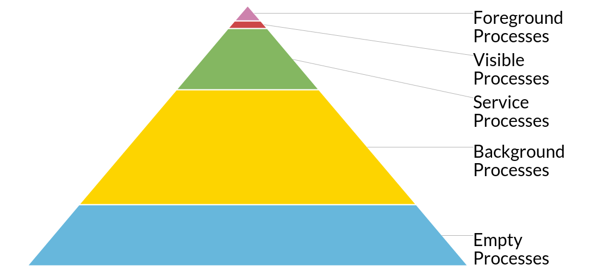

受限于移动设备的内存和电池资源，我们在开发App时要考虑其生死存亡之际要做最后的“挣扎”。首先最重要的一点就是当进程被杀时内存回收相关的尽量不要影响到用户。事实上，Android进程回收是遵循一个金字塔优先级的。
Android进程优先级
你会发现安卓中最重要的进程叫做前台进程，然后是可见进程、服务进程、后台进程以及空进程（官方文档）
注意，安卓系统杀死的是应用进程不是某个组件（activity、service），当然这里不去探讨GC机制是怎样回收内存的。

前台进程
你会想正在与用户交互的东西是最重要的需要保证活着的，这应该完全正确。但是“正在与用户交互”这个定义有点模糊。当前的前台 Activity 毫无争议属于这一类，它是已经调用了 onResume() 方法但还没有收到 onPause() 调用的 Activity 。
一些 activity 在依靠他们自己的同时，也可能依赖 bound service 。任何进程，如果它持有一个绑定到前台 activity 的服务，那么它也被赋予了同样的前台优先级。这完全符合直觉，如果前台 activity 认为和那个服务保持持久连接很重要，那么保持这个服务活着就对 activity 和 Android 很重要。对于正在与前台服务交互的 content provider 也是如此。
但是谁说用户能察觉到的只有 activity ？如果正在播放的音乐突然停止或导航方向突然消失，我一定会很恼火。幸好，Android 可以让服务使用 startForeground() 方法成为高优先级前台服务。这绝对是媒体播放的最佳实践，但是这里要问一个重要问题“如果服务停止了，用户会立刻察觉到吗？”。前台服务应该仅被用于关键的、可被立刻察觉的场景。
注意：要成为前台服务需要在服务中包含一个通知以便让用户注意到这个服务正在运行。如果你觉得你的使用场景不需要这个通知，那么前台服务对你可能不是正确的选择（是的，成为前台服务并不要求一定运行在后台，见下文）。
在接收关键生命周期方法时会让一个进程临时提升为前台进程，包括任何服务的生命周期方法（onCreate(), onStartCommand() 和 onDestroy()） 和任何广播接收器 onReceive() 方法。这样做确保了这些组件的操作是有效的原子操作，每个组件都能执行完成而不被杀掉。
可见进程
等下，我想我已经谈到了当前的 activity？你会发现 activity 可见的时候不一定在前台。一个简单的例子是前台的 activity 使用对话框启动了一个新的 activity 或者一个透明 activity 。另一个例子是当你调用运行时权限对话框时（事实上它就是一个 activity！）。
在收到 onStart() 和收到 onStop() 方法期间的 activity 是可见 activity 。在这两个方法调用之间，你可以做所有可见 activity 能做的事情（实时更新屏幕等）。
和前台 activity 类似，可见 activity 的 bound service 和 content provider 也处于可见进程状态。这同样是为了保证使用中的 activity 所依赖的进程不会被过早地杀掉。
但请记住，只是可见并不意味着不能被杀掉。如果来自前台进程的内存压力过大，可见进程仍有可能被杀掉。从用户的角度看，这意味着当前 activity 背后的可见 activity 会被黑屏代替。当然，如果你正确地重建你的 activity，在前台 activity 关闭之后你的进程和 activity 会立刻恢复而没有数据损失。
注意：你的activity和进程即使可见也可能被杀掉是因为startActivityForResult()+onActivityResult()或requestPermissions()+onRequestPermissionsResult() 流程没有获得回调类的实例。如果你的整个进程死了，那么所有的回调类实例也死了。如果你看到使用回调方式的库，你应该意识到这在低内存压力情况下无法完成。
服务进程
如果你的进程不属于以上两种类别，而你有一个启动的服务(started service)，那么它被看作是一个服务进程。对于许多在后台做处理（如加载数据）而没有立即成为前台服务的应用都属于这种情况。
这没有问题！绝大多数情况，这是后台处理的最佳方式。这种进程只有在前面讲的可见进程和前台进程做了太多事情需要更多资源的时候才会被杀掉。
请特别注意从 onStartCommand() 返回的常量，如果你的服务由于内存压力被杀掉，它表示控制什么发生什么：
- START_STICKY 表示你希望系统可用的时候自动重启你的服务，但你不关心是否能获得最后一次的 Intent （例如，你可以重建自己的状态或者控制自己的 start/stop 生命周期）。
- START_REDELIVER_INTENT 是为那些在被杀死之后重启时重新获得 Intent 的服务的，直到你用传递给 onStartCommand() 方法的 startId 参数调用 stopSelf() 为止。这里你会使用 Intent 和 startId 作为队列完成工作。
- START_NOT_STICKY 用于那些杀掉也没关系的服务。这适合那些管理周期性任务的服务，它们只是等待下一个时间窗口工作。
后台进程
比如说你的 Activity 一开始是前台 Activity，但是用户点了 home 键导致 onStop() 方法被调用。假设你之前一直是高优先级进程类别，这时你的进程将变为后台进程类别。在一般操作场景下，设备上的许多内存就是用在这上面的，让你重新回到之前打开过的某个 activity 。
Android 不是为了杀而杀的（记住：从头启动是有代价的），所以这些进程会保留一段时间，直到更高优先级进程需要内存的时候才被回收，并且是按照最近最少使用顺序（最老的会被优先回收）。然而，当他们被杀掉的时候和可见 activity 处理情况一样，你应该能够在不丢失用户状态的情况下重建这些 activity 。
空进程
在任何层次中，空进程都是最低优先级的。如果不属于以上类别，那它就是这种。这里没有活跃的组件，只是出于缓存的目的而被保留（为了更加有效地使用内存而不是完全释放掉），只要 Android 需要可以随时杀掉它们。
警告和注意事项
当我们谈论进程优先级的时候是以 activity、service 这样的组件来说的，但请记住这些优先级是在进程的级别上，不是组件级别上。只要一个组件（比如一个前台服务）就会将整个进程变为前台进程。绝大多数应用是单进程的，如果你有生命周期差异很大的不同部分或者某个部分非常重量型，那么强烈建议你把它们分为不同的进程，让重量级进程尽早被回收。
同样重要的是，你的进程属于什么类别是组件层面发生的事情决定的。这意味着把非常重要的长时间运行的操作放在 activity 所在进程的一个独立线程中的做法，在进程突然变成后台进程的时候可能会遇到问题。使用你能用到的工具（一个服务或基于优先级的前台服务）来确保系统知道你在做什么。
与别人友好相处，把用户放在心里
整个系统这样工作都是为了用户。做个好公民，做好你的应用，始终让自己工作在合适的优先级上。请记住，作为一个开发者，你使用的手机可能比你用户的最差手机快得多得多，你可能从来不会看到可见进程被杀死，远少于服务进程，但是这不意味着它不会发生！
我仍然建议你购买一个非常低端的 Android 设备用于测试，同时你也可以在高端设备上测试被杀掉时应用是如何响应的。要在包级别杀掉应用，请使用：
|
|
如果你有多个进程，可以在第二栏找到进程 id（PID）(如，下面第一个数字)：
|
|
然后这样杀掉：
|
|
不论内存压力多大，确保你的应用在尽可能多的设备上良好运行的第一步是测试你的应用在被杀掉时是如何响应的。
原文地址：https://medium.com/google-developers/who-lives-and-who-dies-process-priorities-on-android-cb151f39044f
作者： Ian Lake，Google Android 推广工程师